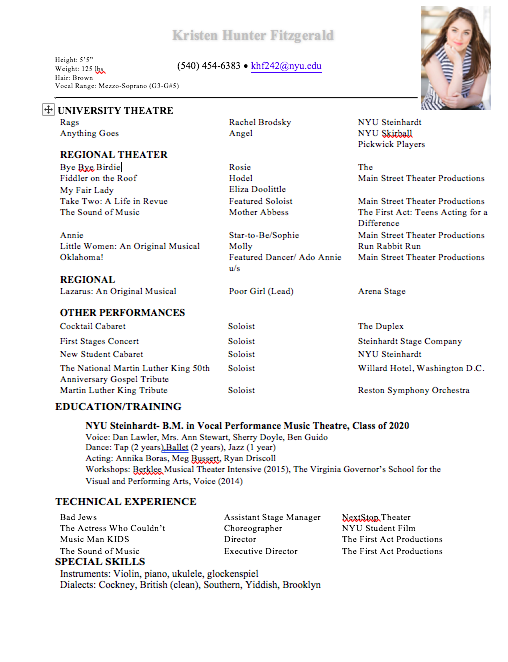

Orginally from a farm in the middle of Virginia, Kristen is a NYC-based actor, singer, teacher, and
director. She is currently a senior at NYU Steinhardt studying Vocal Performance (Music Theatre) with a double minor in Web Development and Applications, and The Business of Media, Entertainment, and Technology. Some of her favorite past acting roles include Rachel Brodsky from Rags, Eliza Doolittle from My Fair Lady (Pickwick Players), Hodel from Fiddler on the Roof (Main Street Theatre) and Annie Oakley in The Best of Broadway (The First Act). In addition to her stage work, Kristen has performed solos in various places, including at the nationally broadcasted 50th anniversary celebration of MLK Memorial, on the Arena stage in DC and most recently at the off-Broadway venue, The Duplex. In 2016, she was named as 3rd best performance by a lead actress in the DC area by OnStage blog.
In addition to performing, Kristen is passionate about teaching and directing, and to this end founded her own theater company, The First Act when she was 16 years old, where she's directed six full productions, educated kids ages 6-18, and raised over $4,000 for local charities.
When Kristen's not performing or teaching, you can find her geeking out about coding languages, reading Harry Potter for the first time (believe me, she knows), or watching the Muppets.

"I love Kristen! She's awesome! I really learned a lot" - people